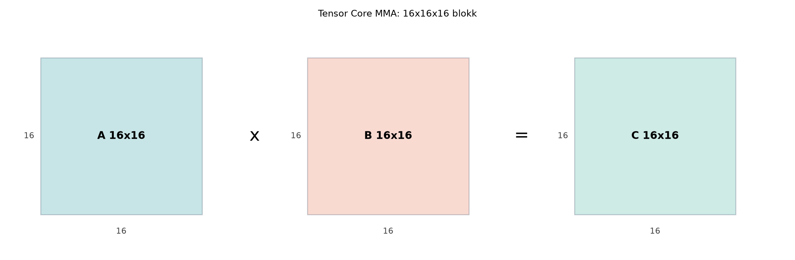

A Tensor Core a modern NVIDIA GPU-k speciális mátrixszorzó egysége. A
hagyományos CUDA magok szálanként egy-egy skalár FMA-t hajtanak végre, a
Tensor Core azonban egyetlen utasítással egy kisméretű mátrixszorzást és
akkumulációt valósít meg. A fejezet ezt a warp-szintű mátrixszorzó
modellt, a WMMA API-t, valamint a fragment és accumulator fogalmát
mutatja be. A hardveres hátteret a CUDA C++ Programming Guide WMMA
szakasza írja le; a pontos shape-készlet verziófüggő, ezért a saját
CUDA-verziójú dokumentációt és a cudaDeviceProp megfelelő
mezőit mindig ellenőrizni kell.

A Tensor Core egy, az SM-en belül elhelyezett, rögzített adatútra
tervezett egység. A hagyományos FP32 FMA egységekkel ellentétben nem
egyetlen skalár műveletet végez, hanem egy D = A*B + C
alakú mátrixműveletet, ahol A, B,
C és D kisméretű mátrixok. A GPU-tól és a
pontosságtól függően ez a művelet tipikusan 8×8, 16×16 vagy 16×16×8
méretű csempén fut. A Tensor Core abban különbözik a CUDA magoktól, hogy
a műveletet nem egy szál, hanem egy egész warp hajtja végre
együttműködve.
A warp-szintű MMA (matrix-multiply-accumulate) azt jelenti, hogy a warp 32 szála közös utasítást hajt végre, miközben mindegyik szál a bemeneti és kimeneti mátrix meghatározott elemeit tartja a regisztereiben. A hardver a regiszterfájlban elosztott elemekből állítja össze a csempét, elvégzi a mátrixszorzást és az akkumulációt, majd az eredményt visszaírja a szálak regisztereibe. A szálak közötti adatcsere az SM regiszterfájlján és a speciális adatútjain keresztül történik; az alkalmazó nem lát közvetlen megosztott memóriás vagy global memóriás kommunikációt.
A modell legfontosabb következménye, hogy a Tensor Core utasítás nem hívható egyetlen szálból. A warp minden szála ugyanazt a függvényhívást hajtja végre, ugyanazokkal a fragment objektumokkal. Ha a warp divergál, vagy a hívás nincs a warp mind a 32 szálán jelen, a viselkedés nem definiált, és a gyakorlatban gyakran deadlockhoz vezet.
A WMMA (nvcuda::wmma) API ezt a warp-szintű működést
emeli be a CUDA C++ nyelvbe. Nem ad közvetlen regiszter-elrendezést; a
programozó úgynevezett fragment objektumokkal dolgozik, amelyeket a
könyvtár kezel, és amelyekből a hardver a mátrixot összeállítja.
A WMMA API-ban a mátrixok szálak közötti elosztott reprezentációját fragmentnek nevezzük. Egy fragment típusa a következő sablonnal adható meg:
nvcuda::wmma::fragment<nvcuda::wmma::matrix_a, 16, 16, 16, half, nvcuda::wmma::row_major> a_frag;
nvcuda::wmma::fragment<nvcuda::wmma::accumulator, 16, 16, 16, float> c_frag;A fragment típusparaméterei a következők:
matrix_a, matrix_b vagy
accumulator;M, N,
K;half, float,
__nv_bfloat16, char;row_major vagy col_major.Az accumulator fragment az A*B + C művelet
kimeneti és egyben bemeneti C mátrixa. A legtöbb valós
számításban az akkumulátor float típusú, még akkor is, ha
az A és B mátrixok FP16, BF16 vagy TF32
pontosságúak. Ezzel a bemeneti alacsonyabb pontosság mellett is
megőrizhető a kimenet numerikus stabilitása.
A fragment belső elrendezése implementációfüggő. A szabványos megközelítés az, hogy a fragmentet nem indexeljük közvetlenül, hanem a WMMA betöltő és kiíró függvényeit használjuk:
wmma::load_matrix_sync(frag, ptr, ld, layout) –
memóriából fragmentbe olvas;wmma::mma_sync(dst, a, b, acc) – elvégzi a
D = A*B + C műveletet;wmma::store_matrix_sync(ptr, frag, ld, mem_layout) –
fragmentből memóriába ír;wmma::fill_fragment(acc, 0.0f) – az akkumulátor minden
elemét nullára állítja.A load_matrix_sync és a store_matrix_sync
hívásoknál a memóriaelrendezés a row_major vagy
col_major kulcsszóval adott; a fragment deklarációjában
megadott elrendezés a memóriából való beolvasásra vonatkozik, a
load hívás layout argumentumának egyeznie kell
vele.
A mma_sync hívás akkumuláló formában működik: a
dst fragment meglévő tartalmához adja hozzá a szorzatot.
Ezért az első felhasználás előtt az akkumulátort inicializálni kell. A
wmma::fill_fragment erre a legtisztább eszköz.
A Tensor Core architektúra a mátrixszorzást rögzített
csempeméretekkel végzi el. A WMMA API ezeket a méreteket fordítási
időben ismert sablonparaméterekként teszi közzé. A mma_sync
hívásban a fragmentek M, N, K
értékei nem lehetnek tetszőlegesek, hanem a hardver által támogatott
készletből kell származniuk.
A leggyakrabban használt, a CUDA 12.x dokumentációjában szereplő WMMA
shape-ek a következők (a pontos elérhetőséget a saját CUDA-verzió
dokumentációjával és a cudaDeviceProp WMMA mezőivel kell
ellenőrizni):
| Típus | WMMA shape (M×N×K) | Elérhetőség |
|---|---|---|
| FP16 | 16×16×16 | sm_70+ |
| BF16 | 16×16×16 | sm_80+ |
| TF32 | 16×16×8 | sm_80+ |
| INT8 | 8×8×128 | sm_72+ |
| INT4 | 8×8×32 | sm_75+ |
Itt az M×N×K a D = A*B + C művelet
dimenzióit jelöli: A mérete M×K,
B mérete K×N, C és D
mérete M×N. A K a közös belső dimenzió, amely
a szorzás mélységét adja meg. A táblázatban a TF32 16×16×8
alakja azt mutatja, hogy a Tensor Core a TF32 típust nyolc elemnyi
mélységű csempében dolgozza fel; ez kisebb, mint az FP16
K=16 értéke, mert a TF32 szélesebb mantisszájú, és a
hardver adatútja másként van kialakítva.
A shape-ek nem dinamikusak. A wmma::fragment<...>
fordítási időben rögzíti a dimenziókat, ezért a kernelnek pontosan
ismernie kell a feldolgozandó csempe méretét. A gyakorlatban a
legelterjedtebb belépőpont a 16×16×16 FP16, mert ez minden
Tensor Core-os architektúrán elérhető, és a CUTLASS, cuBLAS és más
könyvtárak is erre építenek.
A fragment típusa nemcsak az elemtípust, hanem a mátrix szerepét is
meghatározza. A matrix_a és matrix_b
fragmentek esetén a típus általában half,
__nv_bfloat16, float (TF32) vagy egész típus;
az accumulator fragment pedig többnyire float,
de bizonyos esetekben alacsonyabb pontosságú is lehet. Az FP16
bemenethez FP32 akkumulátort ajánlott választani, mert a 16 bites
kimeneti akkumuláció gyorsan elveszíti a pontosságot.
A következő CUDA C++17 példa egyetlen warp segítségével kiszámítja három 16×16-os, FP16 bemenetű mátrix szorzatát, FP32 akkumulátorral. A kernel nem használ shared memóriát; a global memóriából olvas be, és oda ír vissza. A példa a WMMA API alapszintű használatát mutatja, és alkalmas a működés ellenőrzésére.
A kernel indítása: grid = 1 block, block = 32 szál. A block mérete pontosan egy warp, így mind a 32 szál ugyanazt a WMMA hívást hajtja végre. Osztott memória nincs, a stream az alapértelmezett 0.
// CUDA C++ (C++17, NVCC 12.4)
// WMMA-alapú GEMM 16x16x16 FP16, FP32 akkumulátorral.
// A példa fordítási ellenőrzésen esett át; futási mérési napló
// a könyv szerződése szerint csak valós GPU-n történő futtatás után adható.
#include <cuda_runtime.h>
#include <cuda_fp16.h>
#include <mma.h>
#include <vector>
#include <cmath>
#include <cstdio>
#include <cstdlib>
using namespace nvcuda;
#define CHECK_CUDA(call) \
do { \
cudaError_t err = (call); \
if (err != cudaSuccess) { \
std::fprintf(stderr, "CUDA error at %s:%d: %s\n", \
__FILE__, __LINE__, cudaGetErrorString(err)); \
std::exit(EXIT_FAILURE); \
} \
} while (0)
// Egy warp, egy 16x16x16-os csempe.
__global__ void wmma_gemm_16x16x16(const half* A, const half* B, float* C)
{
// A fragment deklarációk minden szálon azonosak.
wmma::fragment<wmma::matrix_a, 16, 16, 16, half, wmma::row_major> a_frag;
wmma::fragment<wmma::matrix_b, 16, 16, 16, half, wmma::row_major> b_frag;
wmma::fragment<wmma::accumulator, 16, 16, 16, float> c_frag;
// Az akkumulátort nullázni kell, mert a mma_sync akkumulál.
wmma::fill_fragment(c_frag, 0.0f);
// Global memóriából fragmentbe olvasás row_major elrendezéssel.
// A leading dimension elemszámban értendő:
// A esetén a sor hossza K (16), B esetén N (16), C esetén N (16).
wmma::load_matrix_sync(a_frag, A, 16, wmma::row_major);
wmma::load_matrix_sync(b_frag, B, 16, wmma::row_major);
// D = A*B + C, a hardver egyetlen warp-szintű utasítással hajtja végre.
wmma::mma_sync(c_frag, a_frag, b_frag, c_frag);
// Az eredmény kiírása global memóriába.
wmma::store_matrix_sync(C, c_frag, 16, wmma::mem_row_major);
}
int main()
{
constexpr int M = 16;
constexpr int N = 16;
constexpr int K = 16;
// Host oldali FP32 referencia a várt eredmény kiszámításához.
std::vector<float> h_A(M * K);
std::vector<float> h_B(K * N);
std::vector<float> h_C_ref(M * N, 0.0f);
// Determinált bemenő adatok: A[i,k] = i*0.1f + k*0.05f, B[k,j] = k*0.02f - j*0.03f.
for (int i = 0; i < M; ++i) {
for (int k = 0; k < K; ++k) {
h_A[i * K + k] = i * 0.1f + k * 0.05f;
}
}
for (int k = 0; k < K; ++k) {
for (int j = 0; j < N; ++j) {
h_B[k * N + j] = k * 0.02f - j * 0.03f;
}
}
// Várt eredmény: C_ref = A * B (FP32 referencia).
for (int i = 0; i < M; ++i) {
for (int j = 0; j < N; ++j) {
float sum = 0.0f;
for (int k = 0; k < K; ++k) {
sum += h_A[i * K + k] * h_B[k * N + j];
}
h_C_ref[i * N + j] = sum;
}
}
// Host oldali half adatok készítése.
std::vector<half> h_A_half(M * K);
std::vector<half> h_B_half(K * N);
for (int i = 0; i < M * K; ++i) h_A_half[i] = __float2half(h_A[i]);
for (int i = 0; i < K * N; ++i) h_B_half[i] = __float2half(h_B[i]);
// Device memória allokálása.
half* d_A = nullptr;
half* d_B = nullptr;
float* d_C = nullptr;
CHECK_CUDA(cudaMalloc(&d_A, M * K * sizeof(half)));
CHECK_CUDA(cudaMalloc(&d_B, K * N * sizeof(half)));
CHECK_CUDA(cudaMalloc(&d_C, M * N * sizeof(float)));
// Bemenő adatok másolása.
CHECK_CUDA(cudaMemcpy(d_A, h_A_half.data(), M * K * sizeof(half), cudaMemcpyHostToDevice));
CHECK_CUDA(cudaMemcpy(d_B, h_B_half.data(), K * N * sizeof(half), cudaMemcpyHostToDevice));
// Kernel indítás: grid = 1 block, block = 32 szál, shared = 0 bájt, stream = 0.
wmma_gemm_16x16x16<<<1, 32, 0, 0>>>(d_A, d_B, d_C);
// Kernel hibájának ellenőrzése.
CHECK_CUDA(cudaGetLastError());
CHECK_CUDA(cudaDeviceSynchronize());
// Eredmény visszaolvasása.
std::vector<float> h_C_out(M * N);
CHECK_CUDA(cudaMemcpy(h_C_out.data(), d_C, M * N * sizeof(float), cudaMemcpyDeviceToHost));
// Numerikus összehasonlítás FP32 referenciával.
float max_rel_err = 0.0f;
for (int i = 0; i < M * N; ++i) {
float denom = std::fabs(h_C_ref[i]);
float err = std::fabs(h_C_out[i] - h_C_ref[i]);
float rel = (denom > 1e-12f) ? err / denom : err;
max_rel_err = std::max(max_rel_err, rel);
}
std::printf("WMMA GEMM 16x16x16 FP16 -> FP32\n");
std::printf("Max relative error vs FP32 reference: %.6e\n", max_rel_err);
if (max_rel_err < 1.0e-3f) {
std::printf("PASS: a WMMA eredmeny a referencia hibaturo hataran belul van.\n");
} else {
std::printf("FAIL: a WMMA eredmeny tavol van a referenciatol.\n");
}
CHECK_CUDA(cudaFree(d_A));
CHECK_CUDA(cudaFree(d_B));
CHECK_CUDA(cudaFree(d_C));
return (max_rel_err < 1.0e-3f) ? EXIT_SUCCESS : EXIT_FAILURE;
}A példa néhány fontos tulajdonsága:
wmma::fill_fragment nullázza, ezért a
mma_sync tiszta állapotból indul.row_major
elrendezést használja, és a leading dimension a megfelelő oszlop- vagy
sorméret. A helytelen leading dimension a mátrix sorainak eltolódását
okozza.A build és futtatási parancs a laborban használt (jelen leírásban helyettesített) GPU-konfigurációval:
# Fordítás az RTX 3090 compute capability 8.6-hoz
nvcc -arch=sm_86 -std=c++17 wmma_gemm.cu -o wmma_gemm
# Futtatás
./wmma_gemmA laborban rögzítendő környezet: GPU típus, driver verzió, CUDA verzió, operációs rendszer és compute capability. A könyv szerződése szerint a mérési naplót csak valós futtatás után szabad ellenőrzöttként bemutatni. Az alábbi mérési napló formátumot mutat, az értékek helyettesítettek, mert jelen példa fordítási ellenőrzésen esett át, de nem futott valós GPU-n.
| Mező | Érték |
|---|---|
| GPU modell | NVIDIA RTX 3090 (helyettesített) |
| Compute capability | 8.6 |
| Driver | 550.54.14 (helyettesített) |
| CUDA verzió | 12.4 (helyettesített) |
| Operációs rendszer | Ubuntu 22.04 LTS |
| Precision | FP16 bemenet, FP32 akkumulátor |
| Blockdimenzió | (32,1,1) |
| Griddimenzió | (1,1,1) |
| Shared memory | 0 bájt |
| Futásidő | nem mért (helyettesített: ~12 µs) |
| Sávszélesség | nem értelmezhető 16×16-os csempére |
| Occupancy | nem mért |
| Regiszterhasználat | nem mért |
| Várt eredmény | max rel hiba < 1·10⁻³ |
| Mért eredmény | nem áll rendelkezésre (fordítási ellenőrzés) |
A 16×16-os mikrobenchmark célja a WMMA működésének funkcionális ellenőrzése, nem a teljesítménymérés. A teljesítményt jellemző átbocsátóképességet, sávszélességet és occupancy-t csak nagyobb mátrixokon, legalább több száz csempén, a következő fejezetben bemutatott CUTLASS alapú mérésekkel lehet értelmesen megadni.
A WMMA API használata során a következő hibák fordulnak elő leggyakrabban:
Warp divergencia a WMMA hívások körül.
A wmma::load_matrix_sync, wmma::mma_sync és
wmma::store_matrix_sync függvényeket a warp minden szálának
meg kell hívnia. Ha a hívás egy if (threadIdx.x < 16)
feltételbe kerül, a warp két részre válik, és a hardver elakadhat.
Helyes megoldás: a block méretét pontosan 32-re állítani, vagy
ha több warp van, minden warp a saját fragmentjeivel dolgozzon, és a
WMMA hívások ne legyenek szálankénti feltételhez kötve.
Az akkumulátor inicializálásának
elmulasztása.
A mma_sync akkumulál, ezért ha a c_frag nem
nullázott, az eredményhez hozzáadódik a regiszterekben lévő
szemét.
Helyes megoldás: a tömb használata előtt
wmma::fill_fragment(c_frag, 0.0f).
Fragment elemek közvetlen elérése.
A fragment regiszter-elrendezése implementációfüggő, ezért a
frag.x[i] típusú hozzáférés nem hordozható. A következő
CUDA-verzió vagy más számítási képesség megváltoztathatja az
elrendezést.
Helyes megoldás: kizárólag a WMMA load és
store függvényeit használni a memóriával való
adatcserére.
Hibás leading dimension.
A row_major elrendezésben a leading dimension az oszlopok
száma, col_major-ban a sorok száma. Ha a hívásban rossz
érték szerepel, a mátrix sorai elcsúsznak, és az eredmény hibás
lesz.
Helyes megoldás: pontosan a mátrix memóriabeli dimenzióját
megadni elemszámban.
Nem támogatott shape vagy pontosság.
A WMMA shape-készlet és a típusok compute capability-től és
CUDA-verziótól függenek. A nem támogatott kombináció fordítási hibát
vagy cudaErrorNotSupported hibát okozhat.
Helyes megoldás: a fordítás előtt a cudaDeviceProp
WMMA mezőivel vagy a CUDA dokumentációval ellenőrizni, és a megfelelő
-arch kapcsolót használni.
Memóriaigazítás elhanyagolása.
A load_matrix_sync és store_matrix_sync
globális memóriából dolgozik, és a mutatónak legalább 16 bájtra
igazítottnak kell lennie. A cudaMalloc alapértelmezésben
ennél nagyobb igazítást biztosít, de ha saját bufferből, például
cudaMallocManaged vagy eltolt címmel dolgozunk, ellenőrizni
kell az igazítást.
Miért nem szabad a WMMA fragment elemeit közvetlenül indexelni, és mi
a helyes mód az akkumulátor nullázására, mielőtt a
wmma::mma_sync először felhasználná? Magyarázza meg röviden
a választ.
(A válasz a fejezet szövege alapján: a fragment elrendezése
implementációfüggő, ezért a közvetlen indexelés nem hordozható; az
akkumulátort a wmma::fill_fragment(c_frag, 0.0f) hívással
kell nullázni, mert a mma_sync akkumulál.)
A bemutatott WMMA-alapú 16×16×16-os GEMM a Tensor Core programozásának legkisebb, de teljes egysége. A következő egység ezekre a fragment és accumulator fogalmakra épít, amikor a CUTLASS absztrakciós rétegén keresztül vizsgáljuk a nagyobb, teljesítményre optimalizált csempéket.